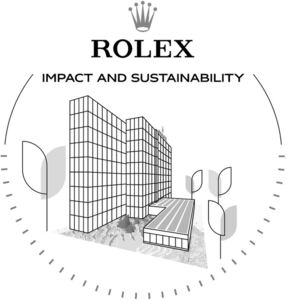

Trade Mark Journal No.2025/025 20 June 2025
WO0000001853516 (14,16,35,36,38,41,42,45)
Office of origin: Switzerland
Date of International Registration:24 January 2025
Date of designation in the UK:
24 January 2025

International priority date claimed: 22 August 2024
(Switzerland)
(819075)
- Class 14
- Timepieces, namely, watches, wrist-watches, component parts for timepieces and accessories for timepieces not included in other classes, clocks and other chronometric instruments, chronometers, chronographs (timepieces), watch bands, dials (timepieces), boxes and cases for timepieces and jewelry, watch movements and their parts; jewelry; precious stones and semi-precious stones; precious metals and alloys thereof; pins (jewelry).
- Class 16
- Newspapers, printed matter, brochures, prospectuses, magazines, periodicals, journals, books, posters, calendars, photographs, publications, cards, illustrations; instructional and teaching material.
- Class 35
- Promotion services; creating, producing and disseminating advertising material (prospectuses, printed matter, video demonstrations); publication of advertising texts; advertising sponsorship and patronage in the fields of environmental protection, science, health, music, art, education and exploration; presenting timepieces, jewelry products on all communication media, for retail purposes; online advertising; providing information and advice to consumers regarding timepieces, jewelry products and articles to be purchased online; retail sale services connected with the sale of jewelry products, timepieces, via global computer networks, by catalog, by mail and by other electronic means; promotional services for horological articles; providing information relating to environmental and social impact monitoring of business and commercial activities; promoting public awareness of issues related to sustainable development and sustainable consumption choices; advertising programs for promoting awareness aimed at encouraging sustainable consumer choices.
- Class 36
- Financial sponsorship and patronage; managing patronage funds; providing financial assistance to social or charitable organizations; awarding grants to artists, educators, researchers, athletes and explorers; financial support of artists, educators, researchers, explorers and athletes.
- Class 38
- Telecommunications, particularly via electronic pages on the Internet and by electronic mail, communication via computer terminals, interactive downloading (transmission) of electronic data and programs, transmission of data (messages, images, sounds) and information via digital media and via the Internet via computer networks; electronic messaging services; audio, video and film recording dissemination services via the World Wide Web.
- Class 41
- Organizing and conducting exhibitions, conferences and forums for educational and entertainment purposes with respect to developments and discoveries; organization of competitions relating to education or entertainment; organization and conducting of colloquiums, conferences, congresses and symposiums; organization of exhibitions for cultural and educational purposes; editing of radio and television programs; film production; videotape film production; providing online, non-downloadable video sequences; Publishing and editing of newspapers, periodicals, magazines, books and texts (other than advertising texts); organizing ceremonies awarding researchers, explorers, artists, educators and athletes; educational and training services relating to sustainable development and sustainable consumption choices; organization and hosting of exhibitions, conferences and forums in the field of sustainable development and sustainable consumption choices.
- Class 42
- Technical project study; research and development of new timepieces (for others), technical, scientific and industrial research; conducting scientific impact studies on sustainable development; scientific research, namely, scientific and technological analysis and observation in support of sustainable development; scientific and technological information services in the fields of planning and evaluation for sustainable development.
- Class 45
- Granting licenses for film, television, video, music and images (legal services); exploitation of film and television copyrights through licensing.
ROLEX SA
Representative: Forresters IP LLP, The Gherkin (11th Floor), 30 St Mary Axe London EC3A 8BF UNITED KINGDOM